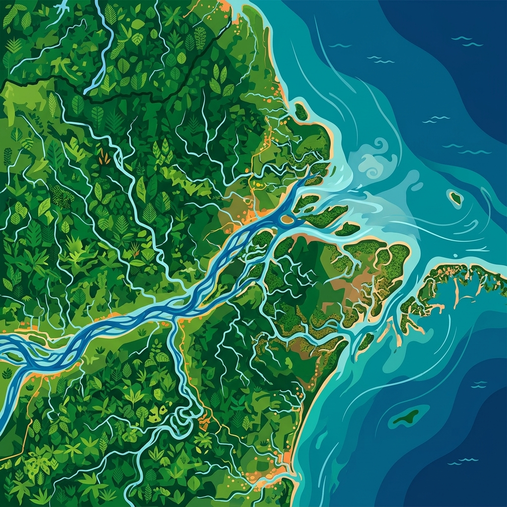

Bridging data science frameworks with ecological research to build a sustainable environment for tomorrow.
Learn More
The Ecoinfo Lab applies cutting-edge technology and data analytics to multifaceted ecology, tackling major challenges facing nature today.
Through artificial intelligence, machine learning, and big data techniques, we provide innovative solutions to identify species distributions, ecosystem responses to climate change, and conservation biology values.
Core projects integrating the latest Information and Communication Technology (ICT)
Simulating habitat shifts of major endangered and endemic species in high resolution using deep learning-based spatial distribution modeling.
View Details →Analyzing time-series data transmitted in real-time from forest environmental sensors to detect anomalies and ecosystem trends.
View Details →Classifying massive waveform data from audio ecological records to trace migratory routes of marine mammals and fish.
View Details →Monitoring land cover and water flow dynamics in the Amazon basin utilizing multi-spectral satellite imagery and deep learning.
View Details →Prominent papers published in world-leading ecological journals
Proposing a novel framework to model nonlinear climate change factors, overcoming the limitations of traditional SDMs.
Analyzing drought stress responses of global temperate forests by correlating 30 years of satellite and meteorological data.
Classifying calls of endemic amphibians with >95% accuracy under background noise using convolutional neural networks.
Academic courses offered by our lab throughout the year
A foundational course bridging the gap between computational sciences and modern ecology. Students learn basic programming, data wrangling, and fundamental ecological models.
An advanced dive into GIS, remote sensing, and machine learning techniques tailored for geographic and species distribution forecasting.
Focused on handling massive ecological datasets including audio, camera trap imagery, and genetic information to formulate conservation strategies.